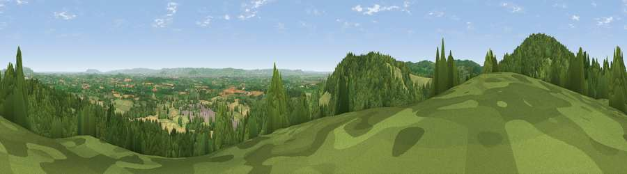

Viewpoint near May Hill
#6801 in England · top 17% of its area beats it · near May HillWhere it is
The exact computed spot (SO 70975 19975). Click the marker for map links.
The view, rendered

A 360° render of this exact spot computed from the terrain model, tree cover and land cover — summer colours, afternoon light, calibrated against photographs of famous viewpoints. Real trees, hedges and buildings will differ in detail.
The panorama
Grey silhouette: terrain skyline in each direction (720 bearings, Earth curvature and refraction included). Dashed green: skyline with trees (+15 m) and buildings (+8 m) as obstacles. Blue strip: how far the ground is visible on each bearing.
Where the view opens
Wedge length = distance to the farthest visible ground on that bearing (vegetation-aware). Rings at 10, 25 and 50 km.
What fills the view
48% woodland · 35% grassland · 14% cropland · 2% built-up
Angular shares of the visible panorama (visual magnitude), not map area. Landscape diversity 0.48 (0–1 Shannon).
Key numbers
More beautiful places nearby
The staircase of upgrades: each row has a higher view potential than everything closer. Driving times are estimates from straight-line distance, calibrated against real road routing — check an actual route before setting out.
| Place | Direction | Drive | Score |
|---|---|---|---|
| Viewpoint near Huntley | SSW · 1 km | ~3 min | 75.0 |
| Viewpoint near May Hill | NW · 2 km | ~5 min | 76.1 |
| Chase Wood Hill | WNW · 11 km | ~21 min | 77.6 |
| Viewpoint near Whaddon | ESE · 14 km | ~25 min | 77.7 |
| Viewpoint near Woolhope | NNW · 16 km | ~28 min | 80.7 |
| Chase End Hill | NNE · 16 km | ~29 min | 81.5 |
| Ragged Stone Hill | NNE · 17 km | ~30 min | 82.5 |
| Midsummer Hill | NNE · 18 km | ~31 min | 83.0 |
51.87758, -2.42304 · source: screening · position refined by local search. Computed location — check access rights before visiting.